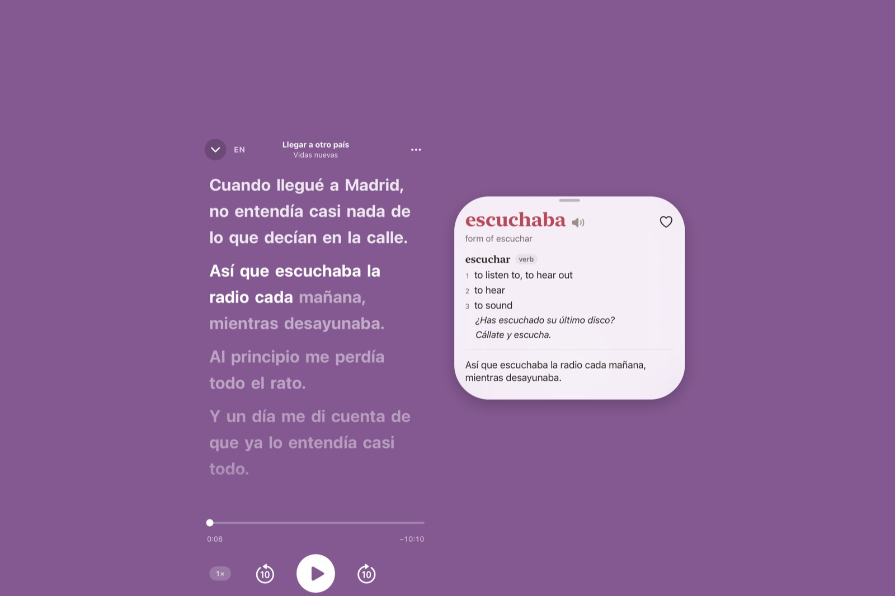
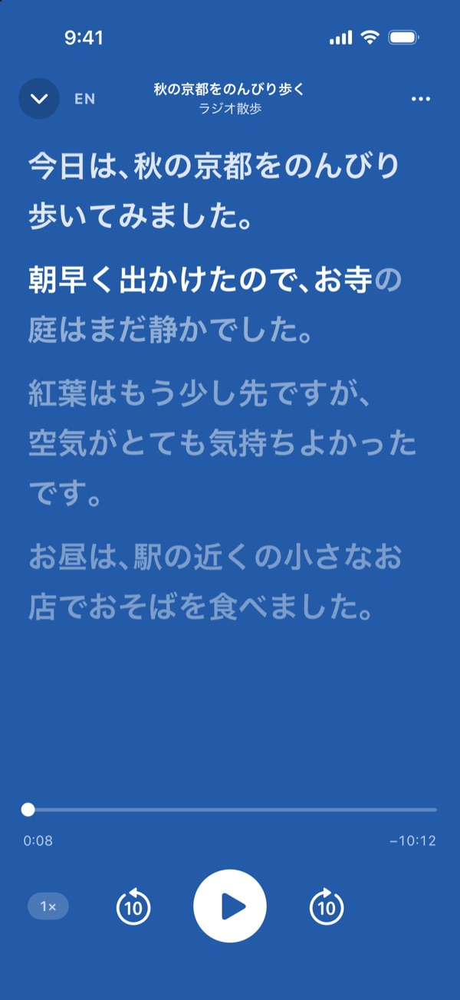
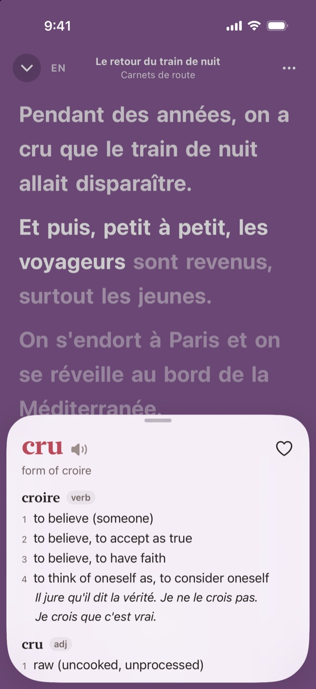
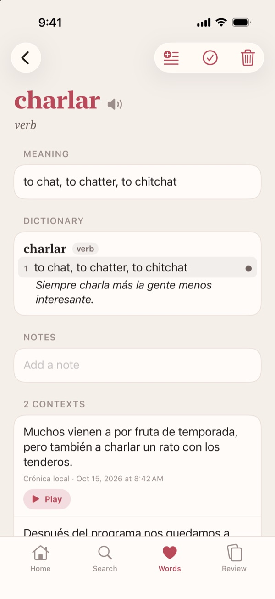
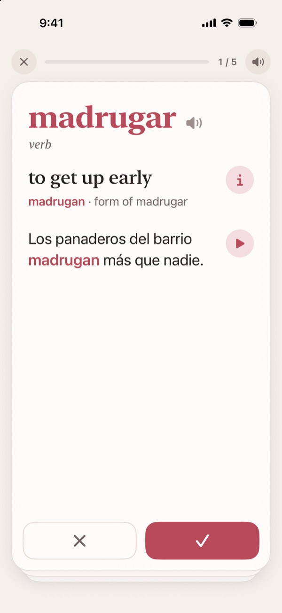

Learn a language from real podcasts and radio
Glosser writes out every word as you hear it, so you can read along, tap any word to see what it means, and save it with its sentence and sound.
For iPhone with iOS 26.


Read along as you listen
- The transcript is made on your iPhone. For an episode it runs ahead of the audio, so you can read ahead or jump anywhere; for live radio it follows the broadcast.
- Switch the whole transcript to English when you need to.
- Start with suggested and popular shows in your language, or live radio. Search for any show, episode or station, or open an audio file of your own.
- Slow it down, skip back or ahead, and pick up where you left off. It keeps playing with the screen off.

Tap any word you miss
- Tap “cru” and you get croire, to believe: every sense in the dictionary, with examples and how it sounds.
- Tap the sentence below the entry, or any example, to see it in English.


Save words and review them
- Save a word with the sentence it came from and a few seconds of the original audio.
- Gather words in lists of your own, and export them as a CSV file or an Anki deck.
- Saved words come back as cards that play their own clips.
- Get a word right and it returns after a day, then three days, a week, three weeks, and every two months after that. Miss it and it returns tomorrow.
- See how long you have listened, and how many words you have saved and learned.
Choose from eight languages
Spanish, German, French, Italian, Portuguese (Brazil), Chinese (Mandarin), Japanese and Korean. The first time you choose a language, your iPhone downloads Apple’s speech model and the dictionary for it.
Privacy
No account, no ads, no analytics. Transcription, translation and dictionary lookups happen on your iPhone, and no audio is sent anywhere to be transcribed. Privacy Policy